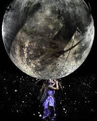

During this tour Ariana Grande has done several special performances. Closer to the start of the tour Ariana headlined at Coachella and was the youngest performer to do so. Here she did several legendary collaberations with artists such as Justin Beiber, Nicki Minaj, and the group NSYNC. The performaces these days were incredible and none of them will be forgotten.
Next on the first of December Ariana started switching up the setlist and added her small Christmas album Christmas n' chill to the setlist of the tour. It was here that she sang True love, Winter Things, and her most iconic Christmas song Santa Tell along with a few others. This part of the tour brought new outfits, stage visuals, and a fresh change to the tour.
Not too much long after the Christmas look came to the Sweetener World Tour Ariana held a special show in Atlanta to celebrate the 10 year anniverssary of the Nickelodeon show she was on Victorious. Here she invited some of her Best friends Matt Bennett and Liz Gillies who also co-stared with Grande on the show. Liz and Ariana performed Give It Up which is a song they sang in the last epsiode of the first season and Matt Bennete later sang I Think You're Swell to Ariana and her fans. This show ended with Ariana singing Thank u, Next while having Matt and Liz dance with her on stage since they also appeared in the Thank u, Next music video.
The last special moment from each show was the songs Ariana would sing under the moon. This time of the show was one of the most special and beautiful times of the entire night. Here Ariana would sing songs such as Moonlight, Honeymoon Avenue, Tattooed Heart, Only 1, Get Well Soon, and one of the best ones of all Good Night n' Go.